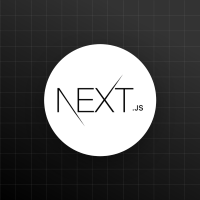
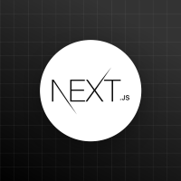
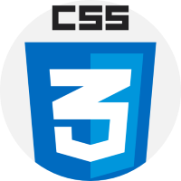
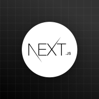
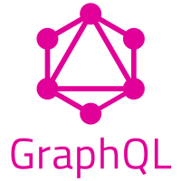
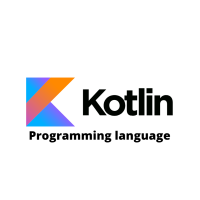
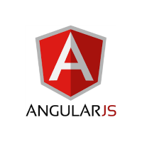

Frontend technologies refer to the tools and frameworks used to build the user interface and user experience (UI/UX) of web applications, mobile apps, and desktop applications. These technologies include HTML, CSS, and JavaScript, which form the backbone of web development, as well as popular frameworks like React, Angular, and Vue.js, which simplify the development process. Additionally, frontend technologies encompass CSS preprocessors like Sass and Less, UI component libraries like Bootstrap and Material-UI, and JavaScript libraries like jQuery, enabling developers to create responsive, interactive, and engaging user interfaces that provide a seamless user experience across various devices and platforms.
 


Backend technologies refer to the tools, frameworks, and languages used to build the server-side logic, database integration, and API connectivity of web applications, mobile apps, and desktop applications. These technologies include programming languages like Java, Python, Ruby, PHP, and Node.js, as well as frameworks like Spring, Django, Ruby on Rails, Laravel, and Express.js, which simplify the development process. Additionally, backend technologies encompass databases like MySQL, MongoDB, PostgreSQL, and Oracle, as well as caching mechanisms like Redis and Memcached, and API management tools like GraphQL and RESTful APIs, enabling developers to create scalable, secure, and efficient server-side applications that power the frontend user interface.

MERN is a popular technology stack used for building modern web applications, consisting of MongoDB, Express.js, React.js, and Node.js. MongoDB provides a NoSQL database for storing and retrieving data, while Express.js serves as a backend framework for building RESTful APIs and handling server-side logic. React.js is a frontend library for building reusable UI components and managing state changes, and Node.js is the JavaScript runtime environment that enables server-side execution. Together, the MERN stack enables developers to build fast, scalable, and maintainable full-stack web applications with a seamless user experience.

MEAN is a popular technology stack used for building modern web applications, consisting of MongoDB, Express.js, Angular.js, and Node.js. MongoDB provides a NoSQL database for storing and retrieving data, while Express.js serves as a backend framework for building RESTful APIs and handling server-side logic. Angular.js is a frontend framework for building complex UI components and managing state changes, and Node.js is the JavaScript runtime environment that enables server-side execution. Together, the MEAN stack enables developers to build fast, scalable, and maintainable full-stack web applications with a seamless user experience.
